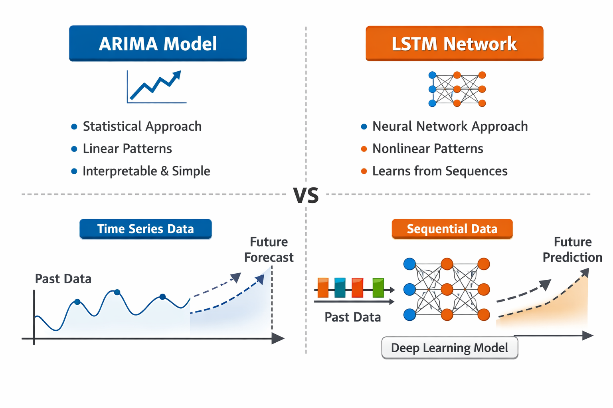

This post introduces time series forecasting in financial markets for readers with little prior background in data science. It explains how historical market data can be used to identify trends, discusses key challenges in financial forecasting, and compares traditional statistical models with modern deep learning approaches.
Why Forecast Financial Markets?
Financial markets generate a large amount of data every day. Stock prices, exchange rates, and interest rates are always changing as a result of economic conditions, company performance, and investor behavior. As these values change over time, they create what is known as time series data. Understanding this type of data is an important step towards making informed financial decisions.
A relevant question in finance is whether past market data can help us understand what might happen in the future. Though it is impossible to predict financial markets with complete accuracy, historical data can still provide useful insights. By analyzing past trends and patterns, analysts can build different models that can estimate future movements and help assess different risks. These forecasts are not guarantees, instead they serve as tools that support decision making under uncertainty.
Time series forecasting plays a key role in this process as it focuses on modeling how values change over time and using that information to make informed predictions. In financial markets, this approach is widely used for tasks such as identifying trends, managing risks, and evaluating different strategies. This blog introduces the core ideas behind time series forecasting in finance and explores two commonly used approaches: a traditional statistical model called ARIMA and a more modern deep learning method known as Long Short Term Memory (LSTM) networks.
What Is Time Series Data in Finance?
Time series data is the observations recorded in chronological order. In finance, this type of data is common as the market variables are measured constantly over time. Examples include the daily closing price of a stock, hourly exchange rates between currencies, or monthly interest rates set by central banks. Unlike the other types of data, the order of these observations matter severely, as each value is influenced by what happened before it.
An example of a financial time series behavior is shown in the movie Dumb Money. The film shows the rise and fall of GameStop’s stock price over a short period of time. If we look at GameStop’s daily closing prices during that period, we would see a time series with sudden spikes, sudden drops, and high volatility. Each day’s price reflects not only the company, but also the investors’ actions, new coverage, and social media influence.
Time series forecasting attempts to learn from historical patterns to make informed estimates about future values. While such forecasts cannot capture every event or value, they can help identify trends and provide context for how markets have behaved under similar conditions in the past.
Challenges of Financial Time Series Data
Forecasting financial time series is hard as market data behaves differently from many other real world datasets. One major challenge is volatility. Financial prices usually experience periods of relative stability followed by sudden spikes. These changes can be triggered by geopolitical events, change in investor sentiment, or economic reports, all of which are hard to predict using historical data alone.
Another major challenge is seasonality. Sometimes financial markets show recurring patterns at times such as lower volumes during certain months. However, these patterns are not always consistent and can vary across time periods which make them harder to model.
Financial time series can also be affected by noise and external factors. Markets are affected by human behavior, speculation, and unexpected news. Even strong historical patterns can break down suddenly. These characteristics make financial forecasting uncertain and it requires models that show flexibility.

Figure 1: Example of volatility in financial markets, illustrating sudden spikes and drops in price.

Figure 2: Example of seasonal patterns in a financial time series over time.
Traditional Approach to Forecasting: ARIMA Models
One of the traditional methods for time series forecasting is through a statistical model called the ARIMA model. ARIMA stands for AutoRegressive Integrated Moving Average, and it is designed to model relationships between past values in a time series. ARIMA attempts to explain future values based on previous observations and past changes in data.
ARIMA models work best when the patterns in the data are relatively stable and linear. They are popular as they are easier to understand and interpret compared to more complex models. Analysts can explain why a particular forecast was produced which is important in our financial setting.
However, ARIMA models have limitations. Like we discussed before, one of the challenges of financial markets is that it rarely follows linear patterns and a sudden change can reduce the model’s accuracy. As the behavior of the market becomes more complex, models like ARIMA struggle to adapt which motivates us to use more flexible approaches.
Modern Approach: Long Short Term Memory Networks
Long Short Term Memory networks, also referred to as LSTMS, are neural networks designed to work with sequential data. Unlike other models that rely on fixed assumptions about their relationships in the data, LSTMs learn patterns directly from historical sequences. They are capable of capturing events that occurred far in the past when they are making their predictions.
From an abstract level, LSTMs attempt to learn which past information is important and which information can be ignored. This makes them well suitable for noisy and complex data such as the financial time series data in our case. LSTMs can model nonlinear relationships and can adapt to the changing patterns that occur.
However, even LSTMs come with some trade offs. They require larger datasets, more computational power, and are harder to interpret. For someone without a technical background, understanding how an LSTM works can be challenging.
Evaluating Forecasts
Finally, when evaluating the forecasting models, we can still run into additional challenges. A model that performs really well on the historical data may fail when the market conditions change. This is why financial forecasts are tested using historical backtesting, where models are tested on past data as if the predictions were made in real time.
Even after careful evaluation, uncertainty can still exist as markets change and strategies that worked before stop working. That is why forecasting models should not be seen as precise methods of prediction, but instead as tools that can help gather uncertainty and support informed decision making.
For beginners understanding these limitations is important and the forecast accuracy should always be interpreted alongside risk and uncertainty.

Figure 3: Conceptual comparison between ARIMA and LSTM models for financial time series forecasting.
Conclusion: Forecasting as a Decision-Support Tool
Models such as ARIMA and LSTM can offer valuable insights into potential future trends. Each approach has its own strengths and weaknesses and no model can fully eliminate uncertainty in the financial market.
The true benefit of financial forecasting does not lie in predicting the exact outcomes, but in improving decision making under uncertainty. As data availability and modeling techniques continue to evolve, time series forecasting will remain a key component of financial analysis.
References
IBM. (n.d.). ARIMA model. IBM Think. https://www.ibm.com/think/topics/arima-model
Olah, C. (2015). Understanding LSTM networks. https://colah.github.io/posts/2015-08-Understanding-LSTMs/
Bhatt, A. (2020). Predicting stock prices using LSTMs: Time series forecasting. Medium. https://medium.com/@aditib259/predicting-stock-prices-using-lstms-time-series-forecasting-a-step-by-step-guide-a70ebb04bbb8